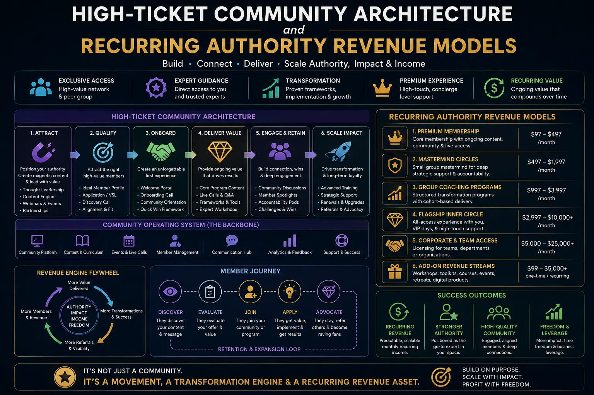
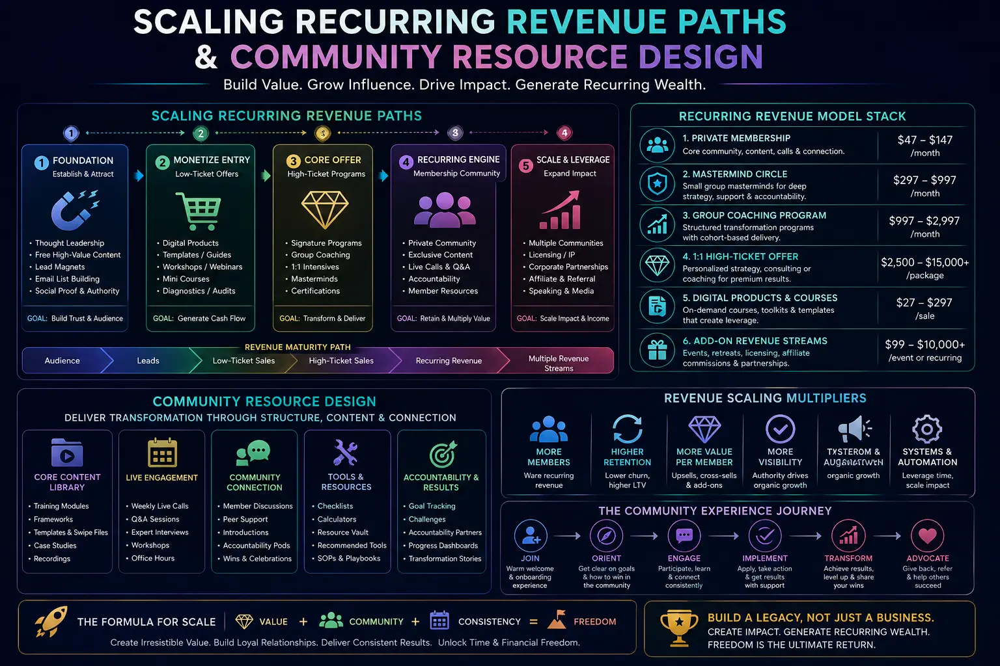

Building a Personal Business Growth Engine via High-Ticket Private Memberships
The Paradigm Shift in Personal Business Growth
For the high-performing solo consultant, independent strategist, or boutique agency owner, the billable hour eventually becomes a cage. In the initial phases of establishing a professional practice, trading your specialized labor directly for a premium fee is a reliable way to validate your skills and build a high-income lifestyle. However, this model has a rigid, structural limitation. Your business revenue is directly bound to your personal calendar. The moment you stop delivering, the income stream evaporates. If you want to scale, you are forced to work more hours, which leads straight to operational fatigue and burnout. True Personal Business Growth requires moving away from the billable hour trap and transitioning into a model that scales independently of your active, hourly presence.
To overcome this boundary, modern builders are leveraging the power of private networks. By establishing a premium, exclusive community, you can shift from a high-touch, one-on-one consulting model to a leveraged, one-to-many delivery ecosystem. Instead of selling your hours, you sell access to a curated circle of peers, a proprietary library of actionable templates, and structured strategic sessions. This is the cornerstone of sustainable Growth strategies for solo founders. A high-ticket membership model allows you to scale your business revenue and profit margins without increasing your delivery time, freeing up valuable hours to focus on high-level strategy, marketing, and asset creation.
To build a successful private membership, you must start by productizing expert knowledge assets. This means identifying the repeatable methodologies, frameworks, and tools you use to help clients achieve their goals, and converting them into structured, self-serve assets. Instead of teaching the same strategy repeatedly, you document it as video guides, operational templates, or interactive playbooks. By packaging your knowledge into a standardized library, you provide immense value to your members on demand, allowing them to achieve significant progress without requiring a direct, one-on-one consultation with you every time. This systematic decoupling of your time from client success is what enables sustainable scaling recurring revenue paths.
The Mechanics of High-Ticket Community Architecture
A premium private network is not just a digital forum or a simple chat channel. To command fees of $10,000 to $30,000+ annually, you must design a structured, elite ecosystem that delivers exceptional utility, curation, and status. We define this strategic design as High-Ticket Community Architecture. The value of this network does not lie in how much content you upload, but in the caliber of the members you admit and the quality of peer-to-peer facilitation you provide. A well-designed High-Ticket Community Architecture makes the network itself the primary value driver; as members share insights, collaborate on deals, and solve complex problems together, the community becomes increasingly valuable to everyone involved.
When architecting this elite space, exclusivity is your greatest asset. You must establish strict, clear criteria for admission to ensure that every member meets a high standard of professional success. This qualification process builds trust, as members know they are surrounded by true peers who can offer genuine, high-level feedback. Additionally, you must design a structured communication calendar that includes regular virtual masterminds, peer-led problem-solving sessions, and occasional high-end offline gatherings. This structured interaction keeps members engaged and fosters deep professional relationships, ensuring high long-term retention rates that support your overall Personal Business Growth goals.
Another critical element of High-Ticket Community Architecture is the curation of the digital workspace. The platform you choose must be clean, secure, and intuitive, allowing members to access the resource library, join discussions, and send direct messages to peers with zero friction. The focus must be on facilitating high-value connections while minimizing noise. By structuring discussion boards around specific strategic outcomes and keeping the overall environment highly professional, you ensure that the community remains a premium, indispensable asset for every member.
Transitioning to Recurring Authority Revenue Models
The biggest threat to a solo founder’s peace of mind is the feast-or-famine cycle typical of transactional consulting. You spend weeks pitching and closing a high-value contract, dedicate the next two months to intensive service delivery, only to realize you have no active pipeline when the project ends. This forced client acquisition loop drains your creative energy and limits your capability to build a scalable asset. By implementing Recurring Authority Revenue Models, you transition from one-off, project-based contracts to predictable, compounding subscription agreements.
Under Recurring Authority Revenue Models, members pay a monthly, quarterly, or annual fee to maintain access to your community, masterminds, and intellectual property. This creates a highly predictable monthly recurring revenue (MRR) stream that forms the financial foundation of your business. With this predictable income, you can confidently invest in software automation, hire support staff, and selectively take on only the highest-value advisory contracts. It changes your market positioning entirely; you are no longer a freelancer searching for your next gig, but an industry authority managing an exclusive, high-ticket circle.
Furthermore, a recurring revenue structure allows you to build a compounding business asset. In traditional consulting, your business has little resale or standalone value because it is entirely dependent on your personal labor. However, when you build a private membership supported by automated marketing, structured delivery, and high member retention, you create a self-sustaining asset. By focusing on scaling recurring revenue paths, you build an independent business that can operate, grow, and generate substantial profits even when you choose to step back from day-to-day operations.
Predictable Compounding Income
Transitioning your practice to Recurring Authority Revenue Models secures a consistent monthly cash flow. This predictable income eliminates the feast-or-famine cycle, allowing you to invest in long-term Personal Business Growth with confidence.
Leveraged Knowledge Delivery
By focusing on productizing expert knowledge assets, you create self-serve guides and tools that deliver value on demand. You decouple your earning capacity from your daily schedule, serving a larger client base with ease.
Highly Curated Elite Network
Implementing structured High-Ticket Community Architecture ensures you attract and retain high-value members. The peer-to-peer environment increases in value as it grows, enhancing retention and brand authority.
Automated Client Acquisition
Deploying predictable B2B inbound client funnels keeps a steady flow of qualified applicants entering your ecosystem. You stop chasing clients and start reviewing qualified applications on autopilot.

Operationalizing the Growth Engine: Predictable B2B Inbound Client Funnels
A premium private community cannot survive without a steady, high-quality flow of new applicants. However, traditional outbound marketing tactics—like cold outreach, bulk emailing, or aggressive social media pitching—are highly ineffective when targeting elite founders and executives. High-value prospects are naturally skeptical of transactional pitches. To attract these premium members, you must deploy predictable B2B inbound client funnels that rely on authority positioning and value-first marketing.
A predictable inbound funnel begins by publishing high-level, authoritative content that directly addresses the unique strategic challenges of your target market. Whether it is a detailed case study, a comprehensive industry whitepaper, or a deep-dive tactical guide, your content must demonstrate that you have a unique, highly effective solution. This content should direct interested readers to a friction-free, high-value conversion point, such as an invitation-only strategic workshop, an interactive diagnostic assessment, or a private application page.
Once a prospect submits an application, automated email nurture sequences take over, sharing member success stories and illustrating the ROI of joining your private circle. This system ensures that only highly motivated, pre-qualified applicants schedule a call with you or your team. By building and optimizing these predictable B2B inbound client funnels, you establish a reliable client acquisition engine that runs continuously in the background, allowing you to maintain strict entry barriers and select only the absolute best fits for your private network.
In addition to attracting new members, an automated inbound funnel plays a critical role in nurturing your existing audience. By continually sharing new, high-value insights with your email list, you maintain top-of-mind awareness and build long-term trust. When a subscriber is finally ready to transition their business and invest in a premium private membership, your community is the obvious, trusted choice. This constant warming of your audience ensures that your inbound funnel remains highly efficient, supporting your long-term goals for Personal Business Growth.
Setting Personal Development Goals for Work Metrics
Moving from a hands-on service provider to a systems builder and community facilitator requires a fundamental shift in how you evaluate your own time and productivity. As a solo consultant, you are accustomed to measuring your performance by the volume of tasks completed or hours logged. When scaling a high-ticket membership, these practitioner-level metrics become obsolete. To lead a leveraged organization, you must set clear personal development goals for work metrics that reflect your new role as an operator.
Setting personal development goals for work metrics involves aligning your focus with high-level operational indicators, such as community engagement health, member retention rates, self-serve asset utilization, and client acquisition cost. Your goals should center around building your capabilities in systems design, marketing automation, group facilitation, and team management. Instead of asking "How many client calls did I host this week?", you must ask "How many hours of direct consulting did I eliminate by documenting our frameworks?" or "How well is our automated onboarding pipeline converting?"
This personal professional evolution is crucial for solo founders. If you do not upgrade your personal skillset and let go of the desire to micromanage every client interaction, you will quickly become the primary bottleneck in your business. By focusing on your development as a systems operator, you build the personal capacity required for successfully scaling recurring revenue paths, ensuring that your private membership continues to run smoothly and profitably as it expands.
Community Tech Stack
Select and implement a modern community platform that combines messaging, event scheduling, and member directories into a single, intuitive interface. This forms the foundation of your High-Ticket Community Architecture.
Proprietary Asset Library
Design a structured, secure resource database where members can access templates, guides, and checklists. Robust community resource design ensures members find high value in self-serve tools.
Funnel & CRM Automation
Integrate your email marketing system with a robust CRM to automate your predictable B2B inbound client funnels. This keeps track of every application and automates member onboarding.

Curating Community Resource Design for Premium Experiences
One of the most common reasons premium members cancel their subscriptions is a lack of clear, actionable utility. If your community is merely a social space, members will eventually find it too noisy and decide to leave. To maintain high retention and justify premium pricing, you must invest heavily in community resource design. This involves creating a comprehensive, organized repository of proprietary assets that members can immediately apply to solve their pressing business challenges.
Effective community resource design includes developing structured templates, standard operating procedures, video tutorials, hiring guidelines, and strategic playbooks. These resources must be organized logically so that a member facing a specific challenge can find and implement the solution within minutes. For example, if your members are founders looking to scale, you can provide pre-built financial models, marketing automation sequences, and interview scorecards. These assets serve as a highly functional, self-serve consulting system that delivers value independently of your time.
Furthermore, your resource library should be updated regularly to reflect changing market conditions and member feedback. By continuously expanding your collection of productized knowledge, you increase the switching cost for your members. They know that leaving your community means losing access to a vital tool library that directly impacts their operational efficiency. This high-value resource design is a key driver of long-term member loyalty and sustained business growth.
Scaling Recurring Revenue Paths: The 90-Day Transition Roadmap
Transitioning your business from a traditional consulting model to a high-ticket private membership requires a structured, phase-by-phase execution plan. Attempting to make the shift overnight can disrupt your current cash flow and confuse your existing clients. To protect your revenue and ensure a smooth operational transition, you must execute a systematic roadmap focused on scaling recurring revenue paths.
- Phase 1: Intellectual Property Audit & Packaging (Days 1-30): Begin by auditing your most successful past consulting projects. Identify the core frameworks, templates, and methodologies that consistently delivered results. Convert these assets into structured, repeatable guides, kick-starting the process of productizing expert knowledge assets. Define your community's niche, value proposition, entry criteria, and premium pricing tiers.
- Phase 2: Platform Construction & Funnel Setup (Days 31-60): Set up your digital community platform and secure resource library. Build the landing pages, application forms, and nurture sequences that make up your predictable B2B inbound client funnels. Establish your tracking systems for personal development goals for work metrics to monitor onboarding conversion rates and resource usage from day one.
- Phase 3: Founding Cohort Launch & Scaling (Days 61-90): Launch your private membership to a select group of founding members, offering them exclusive pricing in exchange for detailed feedback. Facilitate initial masterminds, optimize your community resource design based on their usage patterns, and collect powerful testimonials. Once validated, scale your inbound marketing funnels to attract new members, securing and scaling recurring revenue paths.
Ultimately, building a Personal Business Growth engine via high-ticket memberships is about creating a valuable, independent asset. By implementing strategic Growth strategies for solo founders, you transition from a hands-on service provider to a leveraged business operator. This transition allows you to scale your impact, maximize your profit margins, and reclaim control of your calendar, setting the foundation for long-term professional freedom and financial success.
Frequently Asked Questions
1. What is a High-Ticket Community Architecture and how does it drive Personal Business Growth?
A High-Ticket Community Architecture is the strategic design, operational framework, and membership structure of an exclusive, premium-priced private network designed for high-value clients, founders, or executives. It drives Personal Business Growth by establishing a highly leveraged recurring authority revenue model that productizes your expert knowledge assets into a shared environment. Instead of delivering custom one-on-one consulting, you curate peer-to-peer discussions, facilitate masterminds, and provide group strategic guidance. This allows solo founders to scale their revenue paths and increase profit margins while significantly reducing the hours spent on active service delivery.
2. How do Recurring Authority Revenue Models benefit solo founders?
Recurring Authority Revenue Models benefit solo founders by providing a highly predictable, compounding income stream that is not tied to an hourly billing structure or one-off project contracts. By establishing premium memberships, founders secure consistent monthly or annual recurring revenue (MRR/ARR). This financial stability enables them to focus on long-term Growth strategies for solo founders, invest in systems automation, and selectively pick only the highest-value consulting contracts, eliminating the stressful "feast or famine" cycle typical of independent professional practices.
3. What are the core steps of community resource design for premium memberships?
The core steps of community resource design include: first, defining the specific, high-value outcomes the community helps members achieve; second, developing proprietary frameworks, toolkits, and template libraries that serve as exclusive, self-serve knowledge assets; third, structuring a communication calendar that facilitates peer-to-peer engagement without requiring constant moderation by the founder; and fourth, creating a secure digital platform layout that ensures seamless navigation and asset delivery. This design ensures that the community provides high value to members independent of the founder's daily active involvement.
4. How do you align personal development goals for work metrics with scaling community revenue?
Aligning personal development goals for work metrics with scaling community revenue means identifying the specific community leadership, network curation, and systems management capabilities the founder needs to develop. As you transition from custom consulting to managing a high-ticket network, your role shifts from practitioner to community facilitator and value curator. Setting performance metrics around community engagement health, member retention rates, and self-serve resource usage ensures the founder develops the skills required to run and scale a leveraged scaling recurring revenue paths.
Key Topics
Ready to Build a High-Ticket Community that Scales Your Personal Brand?
At The PhD Ads in Madurai, we specialize in helping consultants, founders, and creative professionals design and implement High-Ticket Community Architecture that builds long-term authority and business leverage. From mapping your community resource design and building predictable B2B inbound client funnels to structuring Recurring Authority Revenue Models, we provide the strategic coaching and technical implementation you need to achieve sustainable Personal Business Growth. Let us help you convert your personal brand into a highly profitable, self-sustaining membership asset.
Email: team@e2o.in